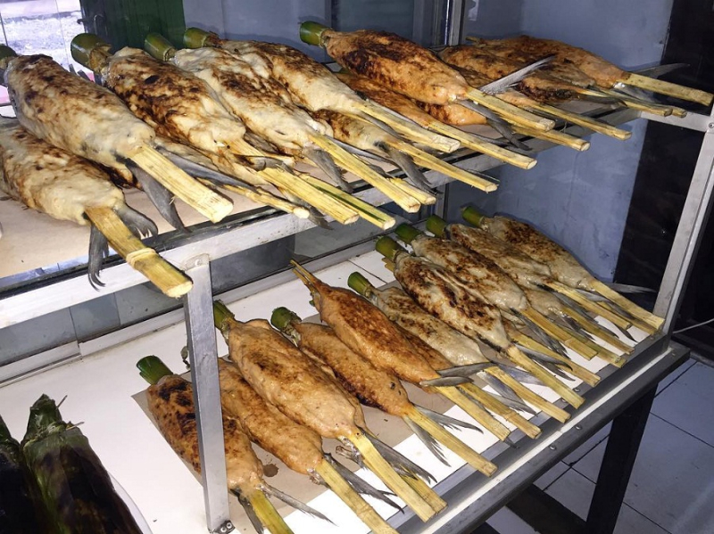

Quiz 1
Homepage
Profile
Hometown
Food
(current)
Tourist
About my local food!
I really love my local food. My favorite one is Satay Bandeng. Just talking about it really make me hungry. It's kinda expensive but very worth it. It cost less than Rp 50.000.
Tangerang local food photo
